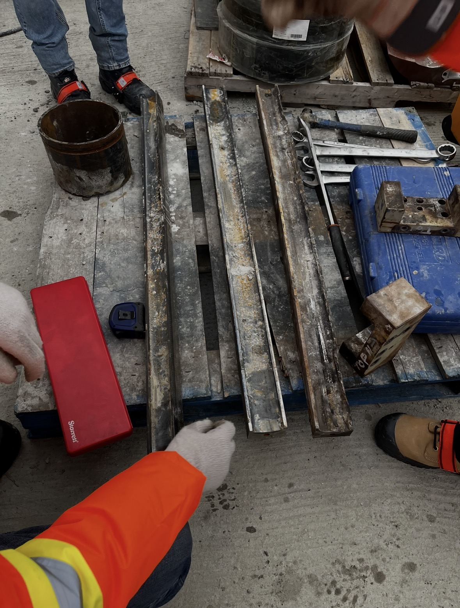
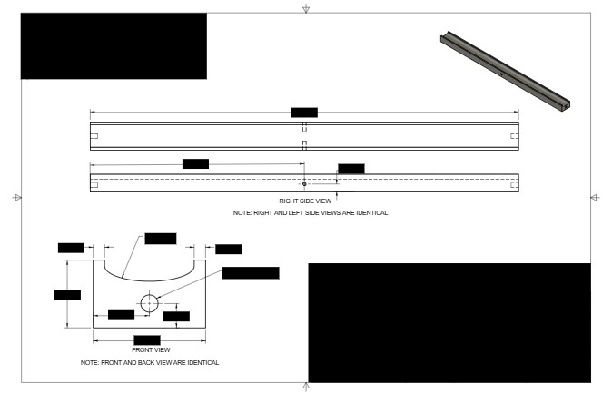

Toolpath Programming
Designed and developed precision CAM toolpaths in Fusion 360 to manufacture a replacement tab used to secure an agitator blade to a rotating shaft. The project involved modelling the component, generating optimized machining strategies, and producing production-ready G-code directly within Fusion 360. Multiple iterations were machined and evaluated on the production line to ensure consistent fit, durability, and manufacturability.
Wear vs. Digital Recreation


WORN PARTs original components
DIGITAL RECREATION EXAMPLE CAD
🖱️ ← Drag the central handle or click/drag on image → | Compare worn vs recreated
FUSION 360 · PRODUCTION READY
The slider above shows the original worn parts (left side) compared to the fully modeled digital recreation engineering drawing(right side).
By dragging the slicer, you can examine the recreated geometry.
Measurement Analysis
Parametric Model Recreation
Production Ready Drawing